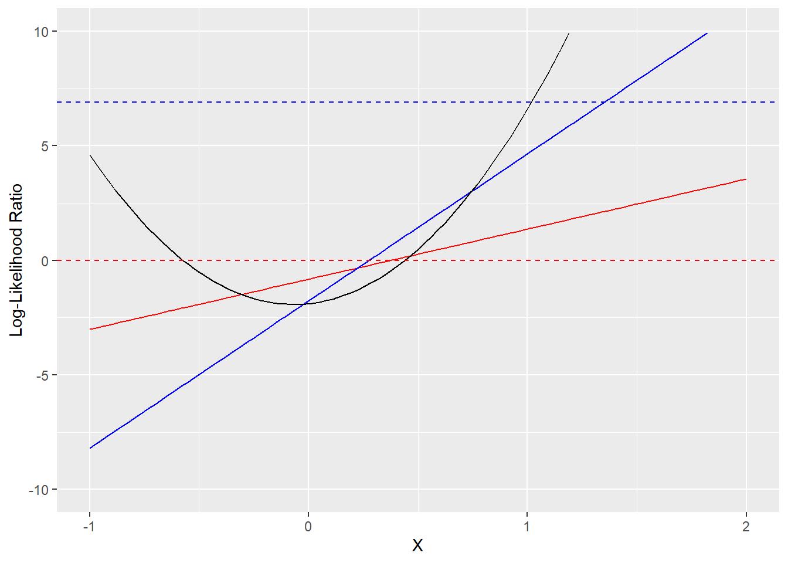
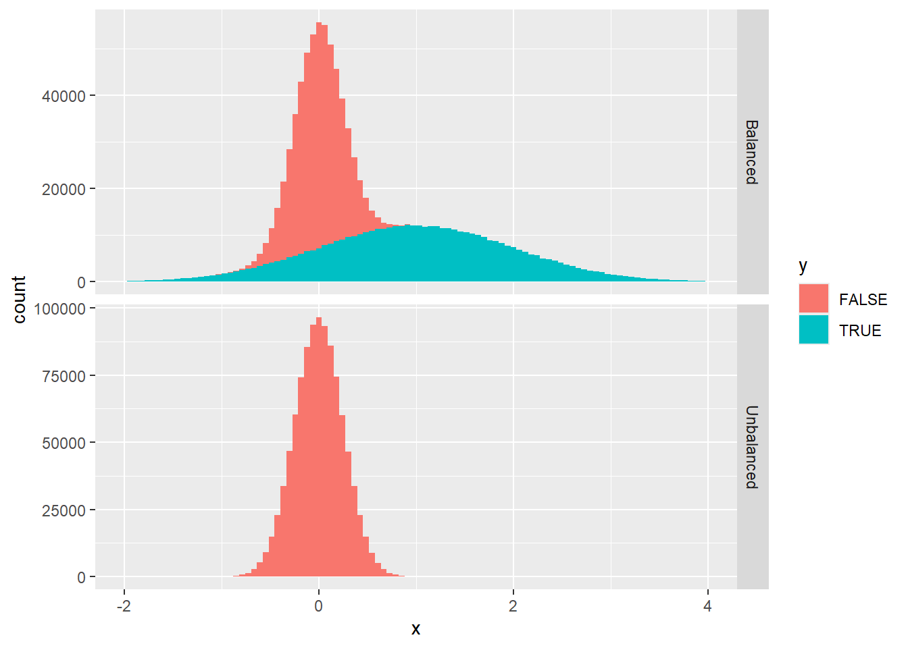

![]()
# Tidyverse facilities for plotting
library(dplyr)
library(ggplot2)
# Loss functions
weighted_loss <- function(par, data, w) {
m <- par[[1]]
q <- par[[2]]
x <- data$x
y <- data$y
z <- m * x + q
p <- 1 / (1 + exp(-z))
-mean(y * w(y) * log(p) + (1-y) * w(1-y) * log(1-p))
}
cross_entropy <- function(par, data)
weighted_loss(par, data, w = \(y) 1)
cllr <- function(par, data)
weighted_loss(par, data, w = \(y) mean(1-y))
# Data generating process
rxy <- function(n, pi = .001, mu1 = 1, mu0 = 0, sd1 = 1, sd0 = 0.25) {
y <- runif(n) < pi
x <- rnorm(n, mean = y * mu1 + (1-y) * mu0, sd = y * sd1 + (1-y) * sd0)
data.frame(x = x, y = y)
}
pi <- formals(rxy)$pi
# Simulation
set.seed(840)
data <- rxy(n = 1e6)
par_cllr <- optim(c(1,0), cllr, data = data)$par
par_cross_entropy <- optim(c(1,0), cross_entropy, data = data)$par
par_cross_entropy[2] <- par_cross_entropy[2] - log(pi / (1-pi))
# Helpers to extract LLRs from models
llr <- function(x, par)
par[1] * x + par[2]
llr_true <- function(x) {
mu1 <- formals(rxy)$mu1
mu0 <- formals(rxy)$mu0
sd1 <- formals(rxy)$sd1
sd0 <- formals(rxy)$sd0
a <- 0.5 * (sd1 ^2 - sd0 ^2) / (sd1 ^2 * sd0 ^2)
b <- mu1 / (sd1^2) - mu0 / (sd0^2)
c <- 0.5 * (mu0^2 / (sd0^2) - mu1^2 / (sd1^2)) + log(sd0 / sd1)
a * x * x + b * x + c
}Intro
During the last few months, I’ve been working on a machine learning algorithm with applications in Forensic Science, a.k.a. Criminalistics. In this field, one common task for the data analyst is to present the trier-of-fact (the person or people who determine the facts in a legal proceeding) with a numerical assessment of the strength of the evidence provided by available data towards different hypotheses. In more familiar terms, the forensic expert is responsible of computing the likelihoods (or likelihood ratios) of data under competing hypotheses, which are then used by the trier-of-fact to produce Bayesian posterior probabilities for the hypotheses in question1.
In relation to this, forensic scientists have developed a bunch of techniques to evaluate the performance of a likelihood ratio model in discriminating between two alternative hypothesis. In particular, I have come across the so called Likelihood Ratio Cost, usually defined as:
\[ C_{\text{LLR}} = \frac{1}{2N_1} \sum _{Y_i=1} \log(1+r(X_i) ^{-1})+\frac{1}{2N_0} \sum _{Y_i=0} \log(1+r(X_i)), \tag{1}\] where we assume we have data consisting of \(N_1+N_0\) independent identically distributed observations \((X_i,\,Y_i)\), with binary \(Y\); \(N_1\) and \(N_0\) stand for the number of positive (\(Y=1\)) and negative (\(Y=0\)) cases; and \(r(X)\) is a model for the likelihood ratio \(\Lambda(X) \equiv \frac{\text{Pr}(X\vert Y = 1)}{\text{Pr}(X\vert Y = 0)}\).
The main reason for writing this note was to understand a bit better what it means to optimize Equation 1, which does not look immediately obvious to me from its definition2. In particular: is the population minimizer of Equation 1 the actual likelihood ratio? And in what sense is a model with lower \(C_\text{LLR}\) better than one with a correspondingly higher value?
The short answers to these questions are: yes; and: \(C_\text{LLR}\) optimization seeks for the model with the best predictive performance in a Bayesian inference setting with uninformative prior on \(Y\), assuming that this prior actually reflects reality (i.e. \(\text{Pr}(Y=1) = \text{Pr}(Y=0) = \frac{1}{2}\)). The mathematical details are given in the rest of the post.
Cross-entropy with random weights
We start with a mathematical digression, which will turn out useful for further developments. Let \(\{(X_i,\,Y_i)\}_{i=1,\,2,\,\dots,N}\) be independent draws from a joint distribution, with binary \(Y_i \in \{0,\,1\}\). Given a function \(w=w(\boldsymbol Y)\) that is symmetric in its arguments3, we define the random functional:
\[ \mathcal L_N^w[f] = -\frac{1}{N}\sum_{i=1} ^N \left[w(\boldsymbol Y)Y_i \log(f(X_i))+ w({\boldsymbol Y}^c)( Y_i^c) \log(f(X_i)^c)\right], \tag{2}\]
where \(f=f(X)\) is any function satisfying \(f(X)\in [0,\,1]\) for all \(X\), and we let \(q^c = 1-q\) for any number \(q \in [0,\,1]\). Notice that for \(w(\boldsymbol{Y}) \equiv 1\), this is just the usual cross-entropy loss.
We now look for the population minimizer of Equation 2, i.e. the function \(f_*\) that minimizes the functional \(f \mapsto \mathbb E(\mathcal L _N ^w [f])\)4. Writing the expectation as:
\[ \mathbb E(\mathcal L _N ^w [f]) = -\frac{1}{N}\sum _{i=1} ^N \mathbb E\left[ \mathbb E(Y_i\cdot w(\boldsymbol Y)\vert X_i)\cdot \log(f(X_i))+E(Y_i^c\cdot w(\boldsymbol Y ^c)\vert X_i)\cdot \log(f^c(X_i))\right], \] we can easily see that \(\mathbb E(\mathcal L _N ^w [f])\) is a convex functional with a unique minimum given by:
\[ f_*(X_i) = \frac{1}{1+r(X_i)^{-1}},\quad r_*(X_i) = \dfrac{E(Y_i\cdot w(\boldsymbol Y)\vert X_i)}{E(Y_i^c\cdot w(\boldsymbol Y^c)\vert X_i)}. \tag{3}\]
The corresponding expected loss is:
\[ \mathbb E(\mathcal L _N ^w [f_*]) = \mathbb E\left[ \mathbb E(Y_i\cdot w(\boldsymbol Y) + Y_i^c\cdot w(\boldsymbol Y^c)\vert X_i)\cdot \mathcal H(f_*(X_i))\right], \] where \(\mathcal H(p) = -p \log (p) -(1-p) \log(1-p)\) is the entropy of a binary random variable \(Z\) with probability \(p = \text{Pr}(Z=1)\) (the index \(i\) in the previous expression can be any index, since data points are assumed to be identically distributed).
Before looking at values of \(f\) other than \(f_*\), we observe that the previous expectation can be succintly expressed as:
\[ \mathbb E(\mathcal L _N ^w [f_*]) = k \cdot H^\prime(Y\vert X), \]
where
\[ k = \mathbb E(Y_i\cdot w(\boldsymbol Y) + Y_i^c\cdot w(\boldsymbol Y^c)) \tag{4}\]
and \(H'(Y\vert X)\) is the conditional entropy of \(Y\vert X\) with respect to a different probability measure \(\text{Pr}^\prime\), defined by:
\[ \text{Pr}^\prime(E) = t \cdot \text {Pr}(E \vert Y = 1) + (1-t)\cdot \text {Pr}(E \vert Y = 0), \tag{5}\]
where \(t=\text{Pr}^\prime(Y=1)\in [0,\,1]\) is fixed by the requirement5:
\[ \dfrac{\text {Pr}^\prime (Y=1)}{\text{Pr}^\prime (Y=0)}=\dfrac{\text {Pr} (Y=1)}{\text{Pr} (Y=0)}\cdot\dfrac{\mathbb E(w(\boldsymbol Y)\vert \sum _i Y_i >0)}{\mathbb E(w(\boldsymbol Y^c)\vert \sum _i Y_i^c >0)}. \tag{6}\]
In terms of \(\text{Pr}^\prime\), the population minimizers \(f_*\) and \(r_*\) in Equation 3 can be simply expressed as:
\[ r_*(X)=\dfrac{\text {Pr}^\prime(Y=1\vert X)}{\text {Pr}^\prime(Y=0\vert X)},\qquad f_*(X)=\text {Pr}^\prime(Y=1\vert X). \tag{7}\]
If now \(f\) is an arbitrary function, we have:
\[ \begin{split} \mathbb E(\mathcal L _N ^w [f]) - \mathbb E(\mathcal L _N ^w [f_*]) &= \mathbb E\left[ \mathbb E(Y_i\cdot w(\boldsymbol Y) + Y_i^c\cdot w(\boldsymbol Y^c)\vert X_i)\cdot \mathcal D(f_*(X_i)\vert \vert f(X_i))\right] &= k\cdot D(\text{Pr}^\prime\vert \vert \text{Pr}^\prime _f) \end{split} \] where \(\mathcal D(p\vert \vert q) = p \log (\frac{p}{q}) + (1-p) \log (\frac{1-p}{1-q})\), and \(D(\text{Pr}^\prime\vert \vert \text{Pr}^\prime _f)\) is the Kullback-Liebler divergence between the measure \(\text{Pr}^\prime\) and the measure \(\text{Pr}^\prime _f\) defined by:
\[ \text{Pr}^\prime _f(Y = 1\vert X)=f(X),\qquad \text{Pr}^\prime _f(X)=\text{Pr}^\prime(X) \] (notice that \(\text {Pr} ^{\prime} _{f_*} \equiv \text{Pr} ^{\prime}\) by definition). Finally, suppose that \(X = g(\widetilde X)\) for some random variable \(\widetilde X\), and define the corresponding functional:
\[ \widetilde{\mathcal L} _N^w[\widetilde f] = -\frac{1}{N}\sum_{i=1} ^N \left[w(\boldsymbol Y)Y_i \log(\widetilde f(\widetilde X))+ w({\boldsymbol Y}^c)( Y_i^c) \log(\widetilde f(\widetilde X)^c)\right]. \] Then \(\mathcal L _N ^w [f] = \widetilde{\mathcal L} _N^w[f \circ g]\). If \(\widetilde f _* =\) is the population minimizer of \(\widetilde{\mathcal L} _N^w\), it follows that \(\mathbb E (\widetilde{\mathcal L} _N^w[\widetilde f _*]) \leq \mathbb E(\mathcal L _N ^w [f_*])\).
Putting everything together, we can decompose the expected loss for a function \(f=f(X)\), where \(X= g(\widetilde X)\), in the following suggestive way:
\[ \begin{split} \mathbb E(\mathcal L _N ^w [f]) &= (L_N ^w)_\text{min}+(L_N ^w)_\text{proc} +(L_N ^w)_\text{missp},\\ (L_N ^w)_\text{min}&\equiv\mathbb E(\widetilde{\mathcal L} _N^w[{\widetilde f} _*]) \\ &= \mathbb E\left[ \mathbb E(Y_i\cdot w(\boldsymbol Y) + Y_i^c\cdot w(\boldsymbol Y^c)\vert \widetilde X _i)\cdot \mathcal H({\widetilde f} _*(\widetilde X _i))\right]\\ &=k\cdot H^\prime(Y\vert \widetilde X),\\ (L_N ^w)_\text{proc}&\equiv\mathbb E(\mathcal L _N ^w [f_*]-\widetilde{\mathcal L} _N^w[\phi_*]) \\& = \mathbb E\left[ \mathbb E(Y_i\cdot w(\boldsymbol Y) + Y_i^c\cdot w(\boldsymbol Y^c)\vert X_i)\cdot \mathcal H(f_*(X_i)) \right]- (L_N ^w)_\text{min}\\ & = k\cdot I^\prime(Y; \widetilde X\vert X),\\ (L_N ^w)_\text{missp} & \equiv \mathbb E(\mathcal L _N ^w [f]) - \mathbb E(\mathcal L _N ^w [f_*]) \\&= \mathbb E\left[ \mathbb E(Y_i\cdot w(\boldsymbol Y) + Y_i^c\cdot w(\boldsymbol Y^c)\vert X_i)\cdot \mathcal D(f_*(X_i)\vert \vert f(X_i))\right]\\ &=k\cdot D(\text {Pr}^\prime\vert \vert \text {Pr}^\prime _f), \end{split} \tag{8}\]
where \(k\) is defined in Equation 4. In the equation for \((L^w _N)_\text{proc}\) we introduced the conditional mutual information (with respect to the measure \(\text{Pr}^\prime\)), that satisfies [Cover and Thomas (2006)]:
\[ I(\widetilde X;Y\vert X) = I(\widetilde X,Y)-I(X,Y) = H(Y\vert X)-H(Y\vert \widetilde X). \]
The three components in Equation 8 can be interpreted as follows: \((L_N ^w)_\text{min}\) represents the minimum expected loss achievable, given the data available \(\widetilde X\); \((L_N ^w)_\text{proc}\) accounts for the information lost in the processing transformation \(X=g(\widetilde X)\); finally \((L_N ^w)_\text{missp}\) is due to misspecification, i.e. the fact that the model \(f(X)\) for the true posterior probability \(f_*(X)\) is an approximation.
All the information-theoretic quantities (and their corresponding operative interpretations hinted in the previous paragraph) make reference to the measure \(\text{Pr}^\prime\) defined by Equation 5 and Equation 6. This is merely the result of altering the proportion of positive (\(Y=1\)) and negative (\(Y=0\)) examples in the \(X\)-\(Y\) joint distribution by a factor dictated by the weight function \(w\) - while keeping conditional distributions such as \(X\vert Y\) unchanged.
A familiar case: cross-entropy loss
For \(w(\boldsymbol {Y}) = 1\), the functional \(\mathcal {L} _{N} ^{w}[f]\) coincides with the usual cross-entropy loss6:
\[ \text{CE}[f] = -\frac{1}{N}\sum_{i=1} ^N \left[Y_i \log(f(X_i))+ (1-Y_i) \log(1-f(X_i))\right]. \tag{9}\]
From Equation 6 we see that the measure \(\text{Pr}^{\prime}\) coincides with the original \(\text{Pr}\), so that by Equation 3 the population minimizer of Equation 9 is \(f_{*}(X) = \text{Pr}(Y=1\vert X)\) (independently of sample size). Since \(k = 1\) (cf. Equation 4), the decomposition Equation 8 reads:
\[ \begin{split} \mathbb E(\text{CE} [f]) &= (\text{CE})_\text{min}+(\text{CE})_\text{proc} +(\text{CE})_\text{missp},\\ (\text{CE})_\text{min}&=H(Y\vert \widetilde X),\\ (\text{CE})_\text{proc}&= I(Y; \widetilde X\vert X),\\ (\text{CE})_\text{missp} &=D(\text {Pr}\vert \vert \text {Pr} _{f}), \end{split} \tag{10}\]
where conditional entropy \(H\), mutual information \(I\) and relative entropy \(D\) now simply refer to the original measure \(\text{Pr}\).
The Likelihood Ratio Cost
The quantity \(C_{\text{LLR}}\) defined in Equation 1 can be put in the general form Equation 2, if we let \(f(X) = (1+r(X)^{-1})^{-1}\) and7:
\[ w(\boldsymbol Y) = \left(\dfrac{2}{N}\sum _{i = 1}^{N}Y_j \right)^{-1} \] In what follows, I will consider a slight modification of the usual \(C_\text{LLR}\), defined by the weight function:
\[ w(\boldsymbol Y) = \dfrac{1}{2(N-1)}\sum _{i = 1}^{N}(1-Y_j). \] This yields Equation 1 multiplied by \(\dfrac{N_1N_0}{N(N-1)}\), which I will keep denoting as \(C_\text{LLR}\), with a slight abuse of notation.
We can easily compute8:
\[ \dfrac{\text {Pr}^\prime (Y=1)}{\text{Pr}^\prime (Y=0)}=1, \tag{11}\]
so that, by Equation 3, the population minimizer of \(C_\text{LLR}\) is:
\[ r_*(X) = \Lambda (X),\quad f_*(X)=\dfrac{1}{1+\Lambda(X)^{-1}}, \]
where \(\Lambda(X)\) denotes the likelihood-ratio of \(X\), schematically:
\[ \Lambda(X)\equiv \dfrac{\text{Pr}(X\vert Y = 1)}{\text{Pr}(X\vert Y = 0)}. \]
The constant \(k\) in Equation 4 is:
\[ k = \text{Pr}(Y = 1)\text{Pr}(Y = 0)=\text{Var}(Y) \]
The general decomposition Equation 8 becomes: \[ \begin{split} \mathbb E(C_\text{LLR} [f]) &= (C_\text{LLR})_\text{min}+(C_\text{LLR})_\text{proc} +(C_\text{LLR})_\text{missp},\\ (C_\text{LLR})_\text{min}&=\text{Var}(Y)\cdot H^{\prime}(Y\vert \widetilde X),\\ (C_\text{LLR})_\text{proc}&= \text{Var}(Y)\cdot I^{\prime}(Y; \widetilde X\vert X),\\ (C_\text{LLR})_\text{missp} &=\text{Var}(Y)\cdot D^{\prime}(\text {Pr}\vert \vert \text {Pr} _{f}), \end{split} \tag{12}\]
where \(\text{Pr}^\prime\) is now given by Equation 11.
Discussion
The table below provides a comparison between cross-entropy and likelihood-ratio cost, summarizing the results from previous sections.
| Cross-entropy | Likelihood Ratio Cost | |
|---|---|---|
| \(f_*(X)\) | \(\text{Pr}(Y = 1\vert X)\) | \((1+\Lambda(X)^{-1})^{-1}\) |
| \(r_*(X)\)` | Posterior odds ratio | Likelihood ratio |
| Minimum Loss | \(H(Y\vert \widetilde X)\) | \(\text{Var}(Y) \cdot H^\prime(Y\vert \widetilde X)\) |
| Processing Loss | \(I(Y; \widetilde X\vert X)\) | \(\text{Var}(Y) \cdot I^\prime(Y; \widetilde X\vert X)\) |
| Misspecification Loss | \(D(f_*\vert\vert f)\) | \(\text{Var}(Y) \cdot D^\prime(f_*\vert\vert f)\) |
| Reference measure | \(\text{Pr}\) | \(\text{Pr}^{\prime} = \frac{\text{Pr}(\cdot \vert Y = 1)+\text{Pr}(\cdot \vert Y = 0)}{2}\) |
The objective of \(C_\text{LLR}\) is found to be the likelihood ratio, as terminology suggests. The interpretation of model selection according to \(C_\text{LLR}\) minimization turns out to be slightly more involved, compared to cross-entropy, which we first review.
Suppose we are given a set of predictive models \(\{\mathcal M_i\}_{i\in I}\), each of which consists of a processing transformation, \(\widetilde X \mapsto X\), and an estimate of the posterior probability \(\text{Pr}(Y = 1\vert X)\). When the sample size \(N \to \infty\), cross-entropy minimization will almost certainly select the model that minimizes \(I(Y; \widetilde X\vert X) + D(f_*\vert \vert f)\). Following standard Information Theory arguments, we can interpret this model as the statistically optimal compression algorithm for \(Y\), assuming \(X\) to be available at both the encoding and decoding ends.
The previous argument carries over mutatis mutandi to \(C_\text{LLR}\) minimization, with an important qualification: optimal average compression is now achieved for data distributed according to a different probability measure \(\text{Pr}'(\cdot) = \frac{1}{2}\text {Pr}(\cdot\vert Y = 1) + \frac{1}{2}\text {Pr}(\cdot\vert Y = 0)\). In particular, according to \(\text{Pr}'\), the likelihood ratio coincides with the posterior odds ratio, and \((1+\Lambda(X)^{-1})^{-1}\) coincides with posterior probability, which clarifies why we can measure differences from the true likelihood-ratio through the Kullback-Liebler divergence.
The measure \(\text{Pr}'\) is not just an abstruse mathematical construct: it is the result of balanced sampling from the original distribution, i.e. taking an equal number of positive and negative cases9. If the \((X,\,Y)\) distribution is already balanced, either by design or because of some underlying symmetry in the data generating process, our analysis implies that likelihood-ratio cost and cross-entropy minimization are essentially equivalent for \(N\to \infty\). In general, with \(\text{Pr} (Y=1) \neq \text{Pr} (Y=0)\), this is not the case10.
The fact that \(C_\text{LLR}\) seeks for optimal predictors according to the balanced measure \(\text{Pr}'\) is, one could argue, not completely crazy from the point of view of forensic science, where “\(Y\in\{0,1\}\)” often stands for a sort verdict (guilty vs. not guilty, say). Indeed, optimizing with respect to \(\text{Pr}^\prime\) means that our predictions are designed to be optimal in a world in which the verdict could be a priori \(Y=0\) or \(Y=1\) with equal probability - which is what an unbiased trier-of-fact should ideally assume. Minimizing \(C_\text{LLR}\), we guard ourselves against any bias that may be implicit in the training dataset, extraneous to the \(X\)-\(Y\) relation and not explicitly modeled, a feature that may be regarded as desirable from a legal standpoint.
Simulated example
In general, the posterior odd ratio and likelihood ratio differ only by a constant, so it is reasonable to try to fit the same functional form to both of them. Let us illustrate with a simulated example of this type the differences between cross-entropy and \(C_{\text{LLR}}\) optimization mentioned in the previous Section.
Suppose that \(X \in \mathbb R\) has conditional density: \[ \phi(X\vert Y) = (2\pi\sigma _Y^2)^{-\frac{1}{2}} \exp(-\frac{(X-\mu_Y)^2}{2\sigma _Y^2}) \] and \(Y\) has marginal probability \(\text{Pr}(Y = 1) = \pi\). The true likelihood-ratio and posterior odds ratio are respectively given by:
\[ \begin{split} \Lambda (X) & \equiv \frac{\phi(X\vert Y=1)}{\phi(X\vert Y=0)} = e ^ {a X^2 + bX +c},\\ \rho (X) & \equiv \frac{\text{Pr}(Y = 1\vert X)}{\text{Pr}(Y = 0\vert X)} = e ^ {a X ^ 2 + bX +c+d}, \end{split} \] where we have defined:
\[ a \equiv \dfrac{\sigma _1 ^2 -\sigma_0 ^2}{2\sigma _0 ^2\sigma_1 ^2},\quad b \equiv \mu _1 - \mu _0, \quad c \equiv \dfrac{\mu_0^2}{2\sigma_0^2} -\dfrac{\mu_1 ^2}{2\sigma _1^2}+\ln(\frac{\sigma _0 }{\sigma _1 }),\quad d \equiv \ln (\frac {\pi}{1-\pi}) . \]
Suppose that we fit an exponential function \(r(X)=e^{mX +q}\) to \(\Lambda(X)\) by likelihood-ratio cost minimization, and similarly \(r'(X)=e^{m'X+q'}\) to \(\rho(X)\) by cross-entropy minimization11. Due to the previous discussion, one could reasonably expect the results of the two procedure to differ in some way, which is demonstrated below by simulation.
The chunk of R code below defines the function and data used for the simulation. In particular, I’m considering a heavily unbalanced case (\(\text{Pr}(Y = 1) = 0.1\%\)) in which negative cases give rise to a sharply localized \(X\) peak around \(X=0\) (\(\mu _0 = 0\), \(\sigma_0 = .25\)), while the few positive cases give rise to a broader signal centered at \(X=1\) (\(\mu _1 = 1\), \(\sigma _1 = 1\)).
So, what do our best estimates look like? The plot below shows the best fit lines for the log-likelihood ratio from \(C_{\text{LLR}}\) minimization (in solid red) and cross-entropy minimization (in solid blue). The true log-likelihood ratio parabola is the black line. Also shown are the \(\text{LLR}=0\) line (in dashed red) and the \(\text{LLR}=\ln(\frac{1-\pi}{\pi})\) (in dashed blue), which are the appropriate Bayes thresholds for classifying a data point as positive (\(Y=1\)), assuming data comes from a balanced and unbalanced distribution, respectively.
ggplot() +
geom_function(fun = \(x) llr(x, par_cllr), color = "red") +
geom_function(fun = \(x) llr(x, par_cross_entropy), color = "blue") +
geom_function(fun = \(x) llr_true(x), color = "black") +
geom_hline(aes(yintercept = 0), linetype = "dashed", color = "red") +
geom_hline(aes(yintercept = -log(pi / (1-pi))),
linetype = "dashed", color = "blue") +
ylim(c(-10,10)) + xlim(c(-1, 2)) +
xlab("X") + ylab("Log-Likelihood Ratio")
The reason why the lines differ is that they are designed to solve a different predictive problem: as we’ve argued above, minimizing \(C_\text{LLR}\) looks for the best \(Y\vert X\) conditional probability estimate according to the balanced measure \(\text{Pr}'\), whereas cross-entropy minimization does the same for the original measure \(\text{Pr}\). This is how data looks like under the two measures (the histograms are stacked - in the unbalanced case, positive examples are invisible on the linear scale of the plot):
test_data <- bind_rows(
rxy(n = 1e6, pi = 0.5) |> mutate(type = "Balanced", llr_thresh = 0),
rxy(n = 1e6) |> mutate(type = "Unbalanced", llr_thresh = -log(pi / (1-pi)))
)
test_data |>
ggplot(aes(x = x, fill = y)) +
geom_histogram(bins = 100) +
facet_grid(type ~ ., scales = "free_y") +
xlim(c(-2, 4))
These differences are reflected in the misclassification rates of the resulting classifiers defined by \(\hat Y(X)=I(\text{LLR}(X)>\text{threshold})\), where the appropriate threshold is zero in the balanced case, and \(\ln(\frac{1-\pi}{\pi})\) in the unbalanced case. According to intuition, we see that the \(C_\text{LLR}\) optimizer beats the cross-entropy optimizer on the balanced sample, while performing significantly worse on the unbalanced one.
test_data |>
mutate(
llr_cllr = llr(x, par_cllr),
llr_cross_entropy = llr(x, par_cross_entropy),
llr_true = llr_true(x)
) |>
group_by(type) |>
summarise(
cllr = 1 - mean((llr_cllr > llr_thresh) == y),
cross_entropy = 1 - mean((llr_cross_entropy > llr_thresh) == y),
true_llr = 1 - mean((llr_true > llr_thresh) == y)
)# A tibble: 2 × 4
type cllr cross_entropy true_llr
<chr> <dbl> <dbl> <dbl>
1 Balanced 0.166 0.185 0.140
2 Unbalanced 0.000994 0.000637 0.000518Final remarks
Our main conclusion in a nutshell is that \(C_\text{LLR}\) minimization is equivalent, in the infinite sample limit, to cross-entropy minimization on a balanced version of the original distribution. We haven’t discussed what happens for finite samples where variance starts to play a role, affecting the efficiency of loss functions as model optimization and selection criteria. For instance, for a well specified model of likelihood ratio, how do the convergence properties of \(C_{\text{LLR}}\) and cross-entropy estimators compare to each other? I expect that answering questions like this would require a much more in-depth study than the one performed here (likely, with simulation playing a central role).
References
Brümmer, Niko, and Johan du Preez. 2006. “Application-Independent Evaluation of Speaker Detection.” Computer Speech & Language 20 (2): 230–75. https://doi.org/https://doi.org/10.1016/j.csl.2005.08.001.
Cover, Thomas M., and Joy A. Thomas. 2006. Elements of Information Theory 2nd Edition (Wiley Series in Telecommunications and Signal Processing). Hardcover; Wiley-Interscience.
Footnotes
This is how I understood things should theoretically work, from discussions with friends who are actually working on this field. I have no idea on how much day-to-day practice comes close to this mathematical ideal, and whether there exist alternative frameworks to the one I have just described.↩︎
The Likelihood Ratio Cost was introduced in (Brümmer and du Preez 2006). The reference looks very complete, but I find its notation and terminology so unfamiliar that I decided to do my own investigation and leave this reading for a second moment.↩︎
That is to say, \(w(Y_{\sigma(1)},\,Y_{\sigma(2)},\dots,\,Y_{\sigma(N)})=w(Y_1,\,Y_2,\dots,\,Y_N)\) for any permutation \(\sigma\) of the set \(\{1,\,2,\,\dots,\,N\}\).↩︎
Nota bene: the function \(f\) is here assumed to be fixed, whereas the randomness in the quantity \(L _N ^w [f]\) only comes from the paired observations \(\{(X_i,\,Y_i)\}_{i=1,\,2,\,\dots,N}\).↩︎
Notice that, due to symmetry \(\mathbb E(w(\boldsymbol Y)\vert \sum _i Y_i >0) = \mathbb E(w(\boldsymbol Y)\vert Y_1 = 1)\), which might be easier to compute.↩︎
Here and below I relax a bit the notation, as most details should be clear from context.↩︎
The quantity \(w(\boldsymbol Y)\) is not defined when all \(Y_i\)’s are zero, as the right-hand side of Equation 1 itself. In this case, we make the convention \(w(\boldsymbol Y) = 0\).↩︎
For the original loss in Equation 1, without the modification discussed above, the result would have been \(\dfrac{\text {Pr}^\prime (Y=1)}{\text{Pr}^\prime (Y=0)}=\dfrac{1-\text {Pr}(Y=0)^N}{1-\text {Pr}(Y=1)^N}.\)↩︎
Formally, given an i.i.d. stochastic process \(Z_i = (X_i,\,Y_i)\), we can define a new stochastic process \(Z_i ^\prime = (X_i^\prime,\,Y_i^\prime)\) such that \(Z_i ^\prime = Z_{2i - 1}\) if \(Y_{2i-1}\neq Y_{2i}\), and \(Z_i ^\prime = \perp\) (not defined) otherwise. Discarding \(\perp\) values, we obtain an i.i.d. stochastic process whose individual observations are distributed according to \(\text{Pr}^\prime\).↩︎
There is another case in which \(C_{\text{LLR}}\) and cross-entropy minimization converge to the same answer as \(N\to \infty\): when used for model selection among a class of models for the likelihood or posterior odds ratio that contains their correct functional form.↩︎
This is just logistic regression. It could be a reasonable approximation if \(\sigma_0 ^2\approx \sigma_1 ^2\), which however I will assume below to be badly violated.↩︎
Reuse
Citation
BibTeX citation:
@online{gherardi2023,
author = {Gherardi, Valerio},
title = {Interpreting the {Likelihood} {Ratio} Cost},
date = {2023-11-15},
url = {https://vgherard.github.io/posts/2023-11-15-interpreting-the-likelihood-ratio-cost/interpreting-the-likelihood-ratio-cost.html},
langid = {en}
}
For attribution, please cite this work as:
Gherardi, Valerio. 2023. “Interpreting the Likelihood Ratio
Cost.” November 15, 2023. https://vgherard.github.io/posts/2023-11-15-interpreting-the-likelihood-ratio-cost/interpreting-the-likelihood-ratio-cost.html.